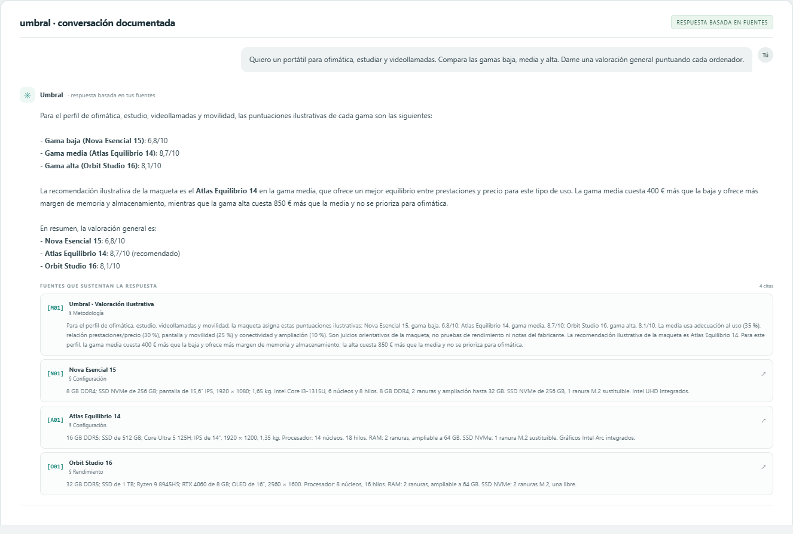
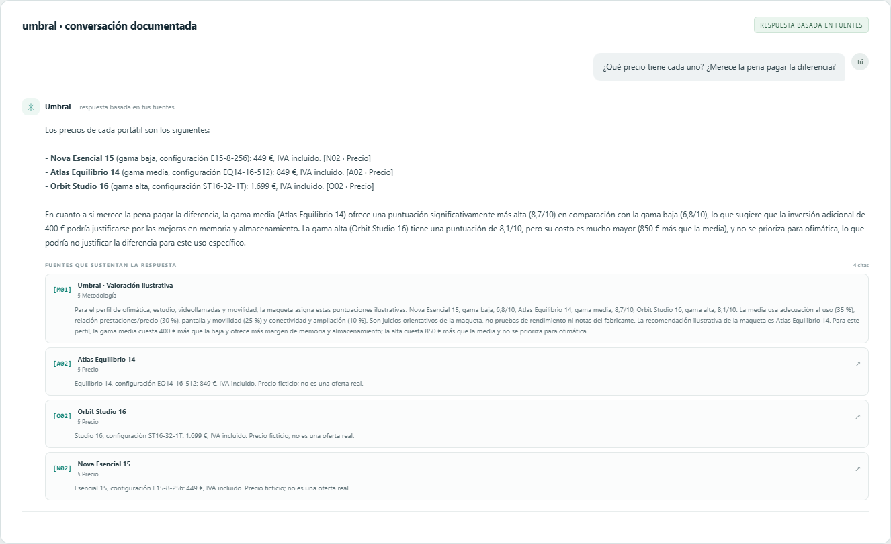
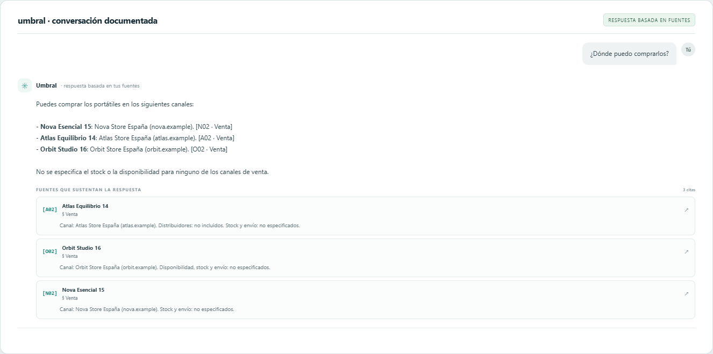
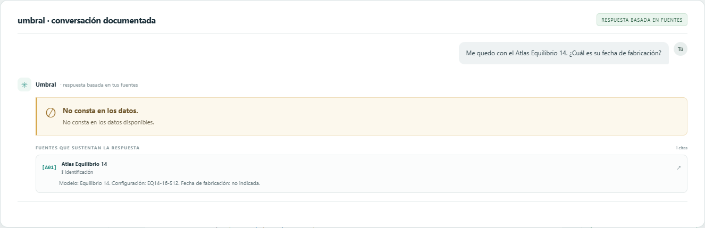
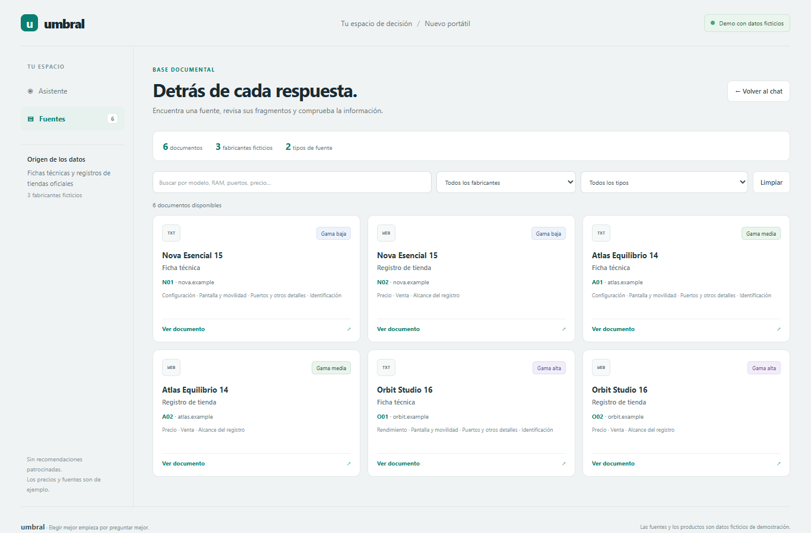

Elegir un portátil para estudiar, trabajar y hacer videollamadas puede
ser difícil cuando las especificaciones, los precios y los compromisos
de cada gama están repartidos en varias fuentes. Umbral compara tres
opciones y responde con fragmentos citados; si un dato no está
disponible, lo reconoce en lugar de inventarlo.
De dónde salen los datos
Seis registros sintéticos incluidos en la maqueta: fichas técnicas
y registros de tienda ficticios de Nova Esencial 15, Atlas
Equilibrio 14 y Orbit Studio 16. La valoración de ejemplo está
documentada aparte en M01 · Metodología. No son ofertas reales ni
datos de mercado actuales.
Qué se entrega
Chat con fuentes, reconocimiento de datos ausentes y biblioteca documental.
Validación visual
Cinco capturas de la aplicación real tomadas con Edge a 1366 × 900.
UMBRAL · PORTÁTIL IDEAL PARA TU DÍA A DÍA16 de octubre de 2026
01 · ChatComparación de gamas
Respuesta con puntuaciones y trazabilidad
Una comparación para el uso cotidiano

CAPTURA 01
Comparación para ofimática, estudio y videollamadas. La respuesta
muestra las puntuaciones 6,8/10, 8,7/10 y 8,1/10, recomienda Atlas
como valoración ilustrativa y cita M01 junto a las fichas técnicas.
02 · ChatPrecios de ejemplo
Respuesta de seguimiento con historial
Precios y diferencia entre gamas

CAPTURA 02
La pregunta “¿Qué precio tiene cada uno? ¿Merece la pena pagar la
diferencia?” conserva el contexto de la comparación anterior. Los
precios llevan IVA y las fuentes indican que son ficticios.
03 · ChatCanales de compra
Respuesta contextual
A cada canal, su fuente

CAPTURA 03
Ante “¿Dónde puedo comprarlos?”, el asistente usa el contexto
conversacional para identificar los tres modelos. También aclara
que las fuentes no especifican stock ni disponibilidad.
04 · ChatLímite de la información
Abstención respaldada por una fuente
Cuando el dato no consta

CAPTURA 04
La pregunta por la fecha de fabricación del Atlas Equilibrio 14
recibe un “No consta en los datos” y cita A01 · Identificación, cuyo
fragmento indica que la fecha no está indicada.
05 · FuentesBiblioteca documental
Listado conectado al servidor
Seis documentos, tres fabricantes

CAPTURA 05
La biblioteca muestra las seis fuentes simuladas y permite
localizarlas por texto, fabricante o tipo de documento.
ComprobaciónPreguntas y evidencia · 1 de 2
Cómo lo comprobé
Respuestas sobre la comparación
Hice las preguntas en la aplicación con el servidor activo y abrí los
fragmentos citados. Las fichas y las puntuaciones son demostrativas:
aquí se comprueba que la respuesta coincide con ese conjunto de
evidencia, no que describa productos reales.
1. “Quiero un portátil para ofimática, estudiar y videollamadas.
Compara las gamas baja, media y alta. Dame una valoración general
puntuando cada ordenador.”
Respondió: Nova 6,8/10; Atlas 8,7/10; Orbit
8,1/10. Recomendó Atlas como opción equilibrada para ese perfil.
Fuentes que debes abrir: M01 · Metodología; N01 ·
Configuración; A01 · Configuración; O01 · Rendimiento.
Coincide.M01 contiene las tres notas
y la recomendación; las otras fichas respaldan las características
usadas en la comparación.
2. “¿Qué precio tiene cada uno? ¿Merece la pena pagar la diferencia?”
Respondió: 449 €, 849 € y 1.699 € con IVA; la
diferencia baja-media es 400 € y media-alta 850 €. Consideró más
equilibrada la gama media para el uso descrito.
Fuentes que debes abrir: N02 · Precio; A02 ·
Precio; O02 · Precio; M01 · Metodología.
Coincide.Los tres registros dan los
precios; la resta coincide y M01 describe la valoración y las
diferencias de precio.
Para consultar N01, A01, O01, N02, A02 y O02, abre “Fuentes” en la
aplicación y selecciona el identificador correspondiente.
ComprobaciónPreguntas y evidencia · 2 de 2
Cómo lo comprobé
Canales de compra y datos ausentes
3. “¿Dónde puedo comprarlos?”
Respondió: Nova Store España, Atlas Store España
y Orbit Store España; no consta el stock o la disponibilidad.
Fuentes que debes abrir: N02 · Venta; A02 ·
Venta; O02 · Venta.
Coincide.Cada registro identifica
su canal y declara que stock/envío o disponibilidad no están
especificados.
4. “Me quedo con el Atlas Equilibrio 14. ¿Cuál es su fecha de fabricación?”
Respondió: “No consta en los datos disponibles.”
No dedujo una fecha a partir del modelo.
Fuente que debes abrir: A01 · Identificación.
Coincide.El fragmento dice
“Fecha de fabricación: no indicada”.
Índice de fuentes para abrir en la biblioteca
N01 Nova Esencial 15 · Ficha técnica
N02 Nova Esencial 15 · Registro de tienda
A01 Atlas Equilibrio 14 · Ficha técnica
A02 Atlas Equilibrio 14 · Registro de tienda
O01 Orbit Studio 16 · Ficha técnica
O02 Orbit Studio 16 · Registro de tienda
M01 · Metodología se consulta en
maquetas.html, en el apartado “Cómo se
calcula la valoración ilustrativa”. Es la fuente local de las notas;
no forma parte de los seis documentos de producto de la biblioteca.
ImplementaciónArquitectura y ejecución
Cómo está hecho
Un servidor privado, una interfaz conectada
Servidor · Python
FastAPI en servidor.py. Divide las seis fichas en
fragmentos, busca por similitud de embeddings y conserva el
índice en data/embeddings.npz.
POST /api/preguntar: pregunta, historial, respuesta y citas.
GET /api/documentos: biblioteca y fragmentos.
Si la información falta o no es pertinente, responde “No consta”.
Interfaz · Svelte
Svelte 5 con TypeScript y Vite. El chat conserva el historial,
muestra fragmentos citados y permite filtrar y abrir documentos.
El navegador llama únicamente a rutas /api; Vite las
reenvía al servidor Python en el puerto 8000. La clave de API se
queda en el .env del servidor.
Modelos
Para generar respuestas se usa gpt-4o-mini. La
recuperación semántica usa embeddings de
text-embedding-3-small; sus vectores se
normalizan y se comparan localmente con NumPy. La consulta por
datos ausentes se resuelve con la evidencia disponible sin pedir
al modelo que invente una respuesta.
Cómo arrancarla
Terminal 1 · desde la carpeta raíz del proyecto:
uv run servidor.py
Terminal 2 · desde web/:
npm run dev
Abre http://127.0.0.1:5173/. Para reproducir las
capturas: desde web/, ejecuta
node capturas.mjs con ambos servicios activos y
Microsoft Edge instalado.
La exportación de este informe se hace con Playwright Core y el Edge
instalado; no se descarga ni instala un navegador automatizado.